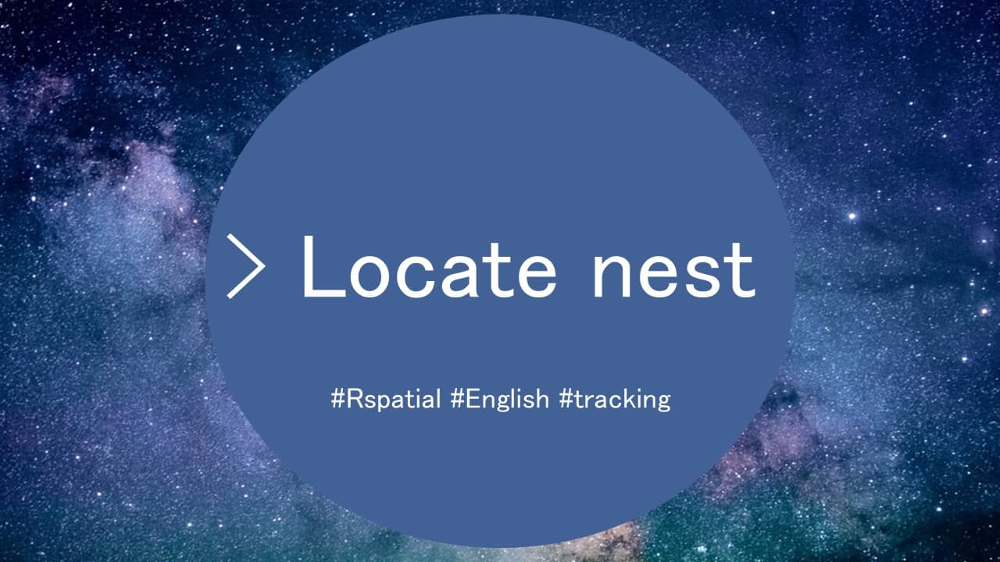

#devtools::install_github("MiriamLL/sula")Locate nest
r
biologging
sula
Y2022
How to locate the nest of the bird using their GPS locations.
Intro
This post is about how to identify the central location from an animal.
For example if you want to identify how far an animals moves, it is helpful to identify where the central location of the animal is to use it as a reference point.
In this post we will use different logic and/or functions to identify central locations for animals.
Data üìñ
To do this exercise, load data from the package ‘sula’.
For accessing the data, you need to have the package installed.
To install:
library(sula)It contains data from 1 individual.
GPS_01<-GPS_01It contains data from 10 tracked individuals.
GPS_raw<-(GPS_raw)Locate nest
If your devices were deployed and activated at the nest of the animal, then you can assume that the first recording is the nest location.
One individual
If you are interested in only one individual you can use the function localizar_nido.
nest<-localizar_nido(GPS_data = GPS_01,lat_col="Latitude",lon_col="Longitude")It returns a row with the longitud and latitude of the nest for that individual.
Several individuals
For identifying the nest location of several individuals, you can use the function localizar_nidos from the package sula.
nests<-localizar_nidos(GPS_data=GPS_raw,
lon_col="Longitude",
lat_col="Latitude",
ID_col="IDs")This function will return a data frame with the location of the nest per individual.
head(nests)Manually üî•
Having some knowledge of the behavior of the animals will help us to identify the nest. In this example, the species (Masked boobies) are mostly diurnal feeders, which means they are mostly at their nest at night.
Therefore, you can filter all the locations at day, and try to find the place where they spent most of their time at night to find the nest.
Data üò¥
For this example, we will be using data from one individual.
head(GPS_01)Night time üåú
library(tidyverse)To use only locations of night, subset the hours for only night time.
You can do this by creating a column with the hour of the day.
GPS_01$Hour <- substr(GPS_01$tStamp, 12, 13)Note that in the example, we use tStamp because is on the correct time zone, for more details click here)
For this area, the night time was considered to be between 6 am (6 h) and 8 pm (20 h).
Here, a new column named Day_or_night to identify the time period will be created.
GPS_01<-GPS_01 %>%
mutate(
Day_or_night = case_when(
Hour > 6 | Hour < 20 ~ "day",
TRUE ~ "night"
)
)Then, filtered to only keep night recordings.
GPS_01_night<- GPS_01 %>%
filter(Day_or_night == 'night')Definition üë©üèΩ‚Äçüöí
Heat mapping, from a GIS perspective, is a method of showing the geographic clustering of a phenomenon. Heat maps show locations of higher densities of geographic entities. Heat mapping is a way of geographically visualizing locations so that patterns of higher than average occurrence of things can emerge. To read more click here.
A heatmap can thus help us to visualize the place where the animal spends most of its time. This would be very often the nest, for breeding animals.
To visualize the heatmap we can use functions from the package ggplot.
library(ggplot2)The function geom_density_2d_filled will create a heat map on the area where most locations were occurring.
ggplot()+
geom_point(data = GPS_01_night, aes(x=Longitude, y = Latitude),
color='black',size = 0.8,alpha=0.4)+
geom_density_2d_filled(data = GPS_01_night, aes(x = Longitude, y = Latitude),alpha = 0.5)+
theme_bw()+
theme(legend.position = 'none')You can already see that there is a region that stands out as where most locations were recorded.
By adding the known-nest using geom_point (as a red-triangle, nest located using the function localizar_nido above), we can corroborate that this region is where the nest of the bird was.
ggplot()+
geom_point(data = GPS_01_night, aes(x=Longitude, y = Latitude),
color='black',size = 0.8,alpha=0.4)+
geom_density_2d_filled(data = GPS_01_night, aes(x = Longitude, y = Latitude),alpha = 0.5)+
geom_point(data=nest, aes(x=Longitude, y=Latitude),color='red',shape=17, size=5)+
theme_bw()+
theme(legend.position = 'none')So, now we know that there is where the animal spend most of the night.
For the next step, we will try to see the coordinates by using an interactive plot of the area that was most used by the animal.
Interactive plot
With ggplotly() by plotly, we can convert ggplot2 figures into interactive ones.
library(plotly)The advantage of using plotly is that it allows zooming in and out of the area and see the place where most of the locations occurred.
By placing the cursor on top of the area, you can see the longitude and latitude.
ggplotly(ggplot(GPS_01_night, aes(x=Longitude, y = Latitude))+
stat_density_2d(aes(fill = ..density..), geom = "raster", contour = FALSE) +
scale_fill_continuous(type = "viridis") +
geom_point(data = GPS_01_night, aes(x=Longitude, y = Latitude),
color='black',size = 0.5,alpha=0.4)+
theme_bw())With this information, we can note down the locations most used.
However, since the GPS has some errors, you will notice that there is not an specific point.
To solve this we can calculate the centroid location, as in the example below.
Automatic ü§ñ
To identify the areas where most points occurred the function kde2d from the package MASS can be used.
library(MASS)night_kde2d <- kde2d(GPS_01_night$Longitude, GPS_01_night$Latitude)Using the function raster from the package raster we can identify the areas of highest occurrence.
library(raster)night_raster<-raster(night_kde2d)Next step is to convert the areas with the highest densities (>95%) into a polygon.
night_pol <- rasterToPolygons(night_raster %/% 95,dissolve = T)Now, we want to keep only the locations that fall inside the most common used areas, and for this we need to transform our points into SpatialPointsDataFrame and our polygon as SpatialPolygonDataFrame.
my_points <-GPS_01_night
sp::coordinates(my_points) <- ~Longitude + Latitude
sp::proj4string(my_points) = sp::CRS("+init=epsg:4326")
class(my_points)
my_polygon<-night_pol
class(my_polygon)Then, using the function over we will end up with densities per point.
inside<- over(my_points, my_polygon)We can add this information to our data frame.
GPS_01_night$inside<-inside
range(GPS_01_night$inside)Finally, filter to just keep the areas of highest occurrence.
GPS_01_high<-GPS_01_night %>%
filter(inside>100000)Centroid üéØ
Now that we have only the locations inside the most use areas, we can calculate the centroid location.
require(sp)
require(rgeos)First, convert the night time to SpatialPoints
GPS_01_sp= SpatialPoints(coords = GPS_01_high[, c('Longitude','Latitude')],
proj4string = CRS("+proj=longlat +ellps=WGS84 +datum=WGS84 +no_defs") )
class(GPS_01_sp)Then, use the function gCentroid to obtain the centroid location.
GPS_01_centroids = gCentroid(GPS_01_sp,byid=FALSE)Obtain coordinates from the centroid location.
centroid<-data.frame(Longitude=GPS_01_centroids@coords[,1],
Latitude=GPS_01_centroids@coords[,2])
centroidCheck if the centroid location fits to the area of the nest.
ggplot()+
geom_point(data = GPS_01_night, aes(x=Longitude, y = Latitude),
color='black',size = 0.8,alpha=0.4)+
geom_density_2d_filled(data = GPS_01_night, aes(x = Longitude, y = Latitude),alpha = 0.5)+
geom_point(data=centroid, aes(x=Longitude, y=Latitude),color='red',shape=17, size=5)+
theme_bw()+
theme(legend.position = 'none')
And thats it, now you should have the centroid location of this individual.
You can do this per individual, or create a function to run automatically to each one of your individuals.
I hope this might help you.
Other resources üë©üèΩ‚Äçüè´
- More options of density plots
- Details on how to use plotly